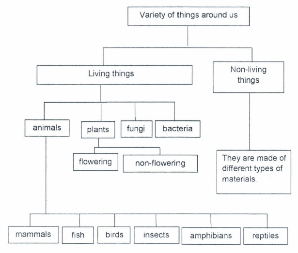
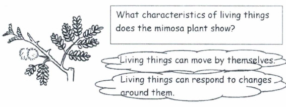
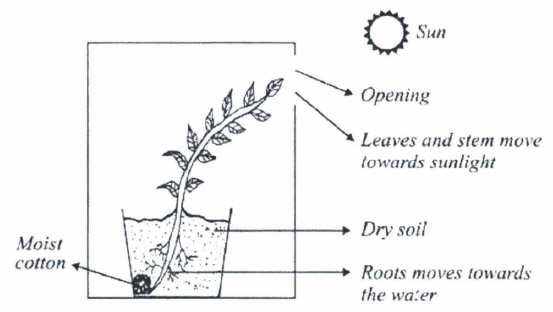

Living and Non-Living Things

What are living things?
- Living things are things which are alive.
- They are able to :
- Reproduce
- Grow
- Move by themselves
- They will also eventually die.
- Plants and animals are living things.
What are Non-Living things?
- Non-Living things are things which are not alive.
- They are not able to reproduce , grow, move or respond to changes around them.
- Examples include plastic ball , metal, pencil case, porcelain cup, etc.
Living things are their needs
Living things and their characteristics
- Living things can have their young or reproduce.
Living things reproduce to ensure the continuity of their own kind.
Thus, the species will not become extinct.
- Living things can grow.
The young of living things can grow to become like their parents.
As they grow , they become stronger and bigger.
- Living things can move by themselves.
Plants move by growing towards sunlight
Some plants are sensitive to touch and close up when they are touched.
Eg. Mimosa plants and Venus flytrap plant
Animals can move from one place to another.

Mimosa plant closes its leaves when someone touches it.
- Living things can respond to changes around them.
Plants will wilt and die when there is not enough water.
The leaves of rain tree open in the morning and close in the evening.
When the weather is cold, we put on more clothing to keep ourselves
warm.
When an animal senses danger, it will make its escape.
- Living things will die when they become old or when they become sick.
Misconceptions
- Wrong concept:
Plants do not move.
- Right concept:
Plants do not move from place to place. All plants
move by growing towards the sunlight. The root of
the plants will move towards the source of water.
For Example:
